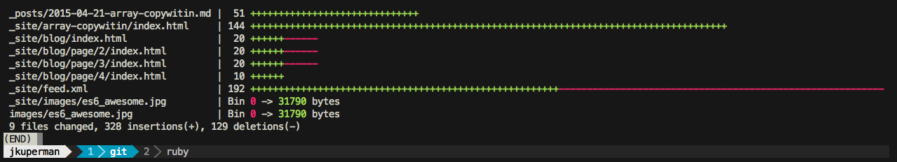
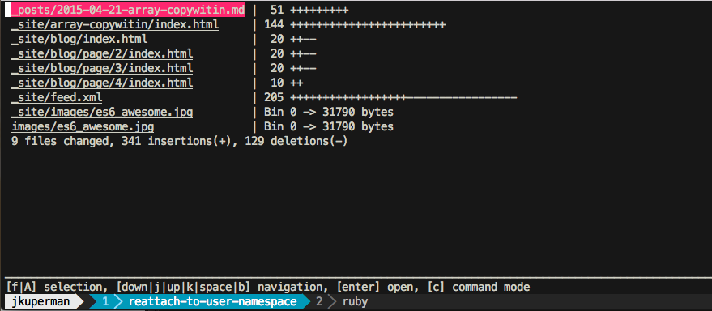
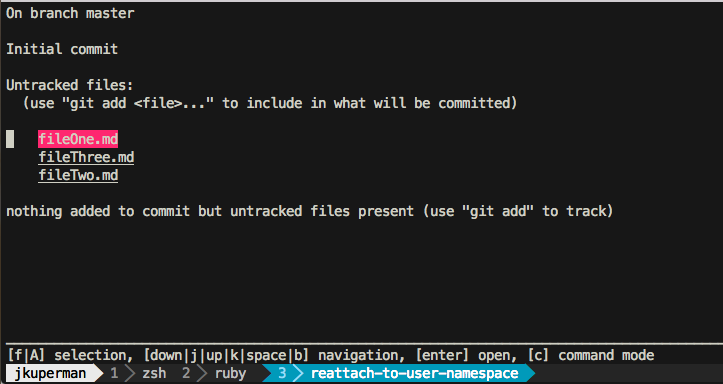
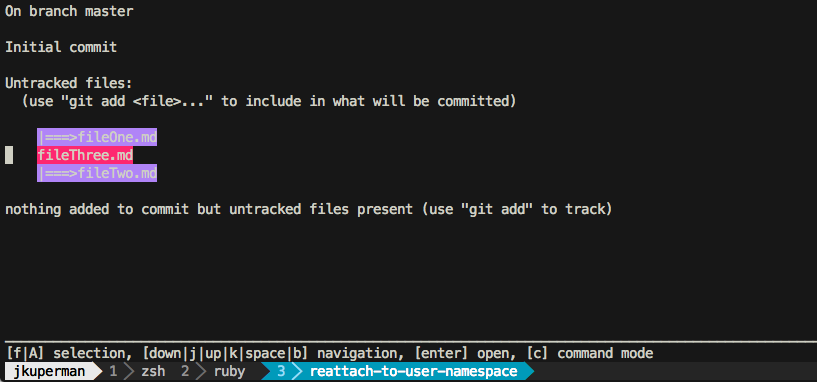
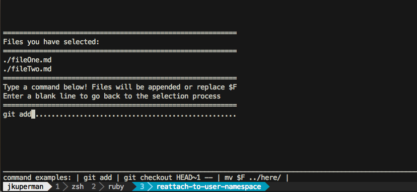
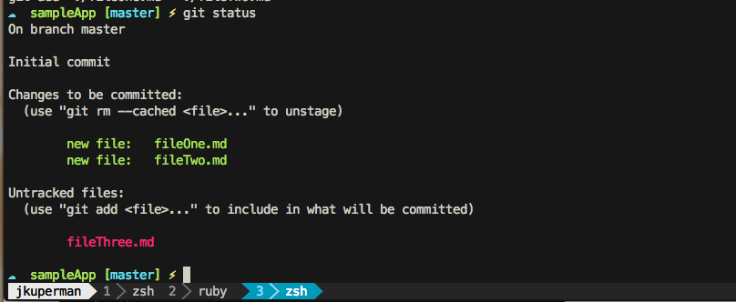

Facebook released a pretty cool piece of open source software yesterday called PathPicker.
It’s a command line tool that gives you a nice UI you can pipe lists of file names to and then act on them.
Explanation
Simply put, FPP is another shell utility like ls, grep and git. That’s how it fits into your workflow. Let me pose a task that will be made easier with FPP.
Say you wanted to list all the files in a current folder, select a few that looked interesting and open them up in your favorite editor to peek at.
Normally, I would use ls to list all the files. Then I would copy / paste or manually type the interesting looking ones into my editor. With FPP you can:
|
|
and then select the interesting looking ones and hit enter. This is the sort of task FPP can help with, more examples to follow!
Installation
You basically have two choices here, Homebrew or pulling the repo from Github. It’s just a command line script so it’ll be easy!
Homebrew
|
|
Github
|
|
Then run fpp and you should be good to go!
Usage
Now that we have it installed, let’s check out some use cases!
Find an active git repo on your computer and change directory to it. First we’ll run
|
|
And we should see something that looks like this: ( my last commit on this blog )

So let’s pipe this output to PathPicker and see what we get!

This is pretty cool. It’s an interactive ui that allows you to move through the changed files, select as many as you want and when you hit enter, it’ll open them up in your system’s default editor.
Controls
The controls are pretty easy to get the hang of, they are as follows:
| Control | Action |
|---|---|
| ↑ / k | Move Up |
| ↓ / j | Move Down |
| A | Select All |
| f | Select Highlighted |
| enter | Open |
| c | Command Mode |
Command Mode
PathPicker is great for opening specific files, but that’s not all it can do. Let’s make a contrived example to show off this functionality.
Scenario You’ve changed 3 files in your version controlled repository. You want to add only two of them to your next commit.
|
|
You should see something like

Now let’s add the two files we want using the arrow keys to navigate and f to select. It should now look like this

Now we’ll enter command mode with c. It should look like this

And voilà! Check to see that it worked with a simple git status. You should see

I’m sure there a million great uses for this tool. If you think of a cool one, let me know on Twitter